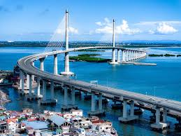

Cebu, Philippines, is a beautiful city known for its historical landmarks. Guests will love visiting the iconic Magellan's Cross, which houses the original cross brought by the Spaniards to the country. Aside from this, the city also features the Fort San Pedro, a beautiful 18th-century Spanish fort, where guests can learn more about the city's history.
Cebu City, city, Cebu Island, south-central Philippines. Located on Cebu Islands eastern coast, it is protected by offshore Mactan Island and by the inland Cordillera Central. It is one of the countrys largest cities and is a bustling port. Its harbour is provided by the sheltered strait between Mactan Island and the coast.
The most densely populated island in the Philippines, Cebu is a progressive cultural hub. Cebuano culture has been influenced by Spanish culture and indigenous Philippine traditions and while Chinese religion has slowly seeped in, the majority of the population are Roman Catholic. While Filipino (Tagalog) is the official language here, youll hear Cebuano, the native language of Cebu and most of the central and southern Philippines widely spoken.
Cebu City is politically subdivided into 80 barangays.[1][2] The city is divided into two legislative districts, with 46 barangays to the north (1st District) and 34 barangays to the south (2nd District), for the purposes of electing members to the House of Representatives of the Philippines and the Sangguniang Panlungsod. As of the 2020 census, 58 barangays are classified as urban barangays where 888,481 (92.15%) of Cebu City's population lives, while the remaining 22 rural barangays are home to 75,668 residents, representing 7.85% of the total population.[3]
The Sinulog-Santo Niño Festival (as known as Sinug and Sulog) is an annual cultural and religious festival held on the third Sunday of January in Cebu, with the center of the activities being in Cebu City, and is the centre of the Santo Niño Christian celebrations in the Philippines.